serosolver
vignettes/advanced_features.Rmd
advanced_features.RmdThe main serosolver guide
introduces the usual serosolver workflow, including output
files and convergence diagnostics. In practice, however, the available
data do not always fit that simple setup. An infection may be known from
another source, an individual may already have antibody at the start of
the analysis, or different assays may measure related but distinct
antibody responses.
serosolver supports a number of advanced features to
accommodate more complex systems and assumptions. These include:
This vignette is based around a simulated, small longitudinal serosurvey. We assume there are 120 individuals, five serum samples per person, and 25 possible infection times. Antibody is measured against a subset of the possible biomarker IDs.
set.seed(123)
possible_exposure_times <- 1:25
sampling_times <- c(8, 12, 16, 20, 24)
measured_biomarker_ids <- seq(1, 25, by = 2)
n_indiv <- 120
antigenic_map <- data.frame(
x_coord = seq(0, 4, length.out = length(possible_exposure_times)),
y_coord = sin(seq(0, 2 * pi, length.out = length(possible_exposure_times))),
inf_times = possible_exposure_times
)
demographics <- data.frame(
individual = seq_len(n_indiv),
birth = sample(1:4, n_indiv, replace = TRUE)
)
data(example_par_tab)
base_par_tab <- example_par_tab %>% filter(names != "phi")
base_par_tab$values[base_par_tab$names == "min_measurement"] <- 0
base_par_tab$values[base_par_tab$names == "max_measurement"] <- 10
base_par_tab$lower_bound[base_par_tab$names == "min_measurement"] <- 0
base_par_tab$upper_bound[base_par_tab$names == "min_measurement"] <- 0
base_par_tab$lower_bound[base_par_tab$names == "max_measurement"] <- 10
base_par_tab$upper_bound[base_par_tab$names == "max_measurement"] <- 10
attack_rates <- simulate_attack_rates(
infection_years = possible_exposure_times,
mean_par = 0.15, sd_par = 0.05, n_groups = 1
)
simulated_data <- simulate_data(
par_tab = base_par_tab, n_indiv = n_indiv,
possible_exposure_times = possible_exposure_times,
measured_biomarker_ids = measured_biomarker_ids,
sampling_times = sampling_times, nsamps = length(sampling_times),
antigenic_map = antigenic_map, attack_rates = attack_rates,
data_type = "discrete", demographics = demographics
)
antibody_data <- as.data.frame(simulated_data$antibody_data)
head(check_data(antibody_data))
#> individual sample_time birth repeat_number biomarker_id biomarker_group
#> 1 1 8 3 1 1 1
#> 2 1 8 3 1 3 1
#> 3 1 8 3 1 5 1
#> 4 1 8 3 1 7 1
#> 5 1 8 3 1 9 1
#> 6 1 8 3 1 11 1
#> measurement
#> 1 2
#> 2 1
#> 3 2
#> 4 1
#> 5 0
#> 6 1In the usual workflow, all infection states are estimated from the
serological data. Sometimes there is additional information about a
particular individual and time period, such as a confirmed infection or
a period during which infection was known not to have occurred. These
states can be supplied as a long data frame with
individual, time, and value
columns. The supplied rows are held fixed while the remaining infection
states are estimated.
Here, 10% of the simulated infection-state entries are treated as known.
infection_matrix <- as.matrix(simulated_data$infection_histories)
all_infection_states <- data.frame(
individual = rep(seq_len(nrow(infection_matrix)),
each = length(possible_exposure_times)),
time = rep(possible_exposure_times, times = nrow(infection_matrix)),
value = as.vector(t(infection_matrix))
)
set.seed(123)
known_state_rows <- sample(
seq_len(nrow(all_infection_states)),
size = ceiling(0.10 * nrow(all_infection_states))
)
fixed_inf_hists <- all_infection_states[known_state_rows, ]
head(fixed_inf_hists)
#> individual time value
#> 2463 99 13 0
#> 2511 101 11 0
#> 2227 90 2 0
#> 526 22 1 0
#> 195 8 20 0
#> 2986 120 11 0
fixed_fit <- serosolver(
par_tab = base_par_tab, antibody_data = antibody_data,
antigenic_map = antigenic_map,
possible_exposure_times = possible_exposure_times,
fixed_inf_hists = fixed_inf_hists,
filename = "fixed_infection_states", data_type = "discrete",
n_chains = 3, parallel = TRUE, mcmc_pars = mcmc_pars
)The model-fit plot uses the full simulated history as a reference. Only the 10% selected above were supplied to the fit; the remaining states were still estimated from the antibody data. In the infection-probability panel below, the blue points mark some of the supplied fixed states. A fixed infection has posterior probability 1 at that time, while a fixed non-infection has posterior probability 0.
fixed_fit$all_diagnostics$theta_estimates %>%
select(names, median, lower95_CrI, upper95_CrI) %>% head(10)
#> names median lower95_CrI upper95_CrI
#> <char> <num> <num> <num>
#> 1: boost_long 2.009 1.9149 2.045
#> 2: boost_short 1.967 1.7191 2.125
#> 3: wane_short 0.246 0.2071 0.277
#> 4: cr_long 0.100 0.0854 0.109
#> 5: cr_short 0.402 0.3686 0.424
#> 6: obs_sd 1.002 0.9835 1.030
#> 7: total_infections 390.000 389.5500 391.000
plot_model_fits(
fixed_fit$mcmc_chains$theta_chain, fixed_fit$mcmc_chains$inf_chain,
settings = fixed_fit$settings, individuals = 1:4,
known_infection_history = infection_matrix,
orientation = "cross-sectional", expand_to_all_times = TRUE
)[[1]] + theme(axis.text.x = element_text(angle = 45, hjust = 1))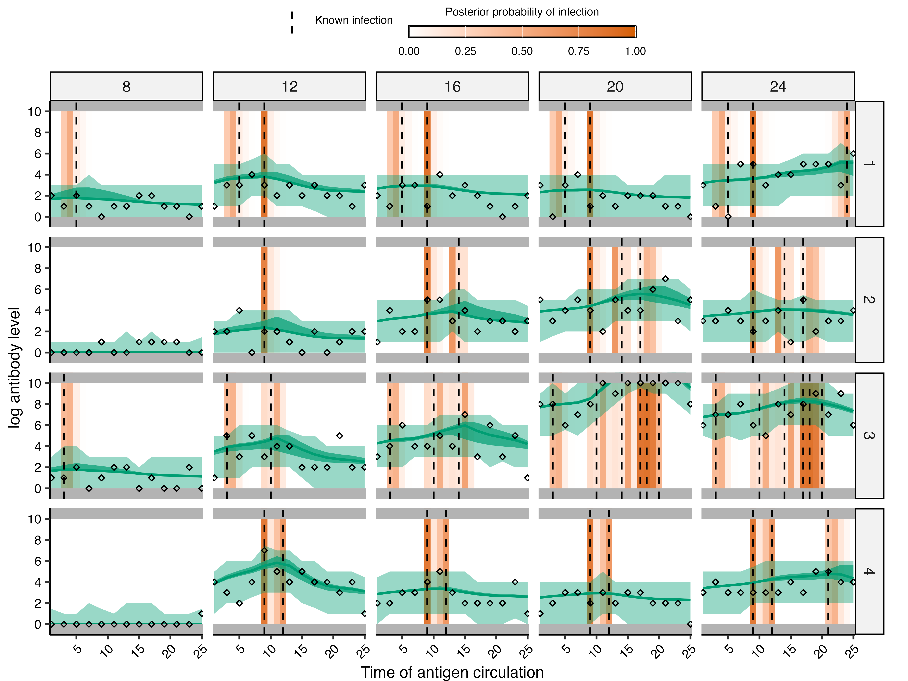
fixed_states_to_plot <- fixed_inf_hists %>%
filter(individual %in% 1:16) %>%
transmute(i = individual, j = time, value = value)
plot_cumulative_infection_histories(
fixed_fit$mcmc_chains$inf_chain,
indivs = 1:16,
real_inf_hist = infection_matrix,
possible_exposure_times = possible_exposure_times,
pad_chain = TRUE
)[[2]] +
geom_point(
data = fixed_states_to_plot,
aes(x = j, y = value),
inherit.aes = FALSE,
shape = 21, fill = "white", colour = "blue", size = 2
) +
theme(axis.text.x = element_text(angle = 45, hjust = 1))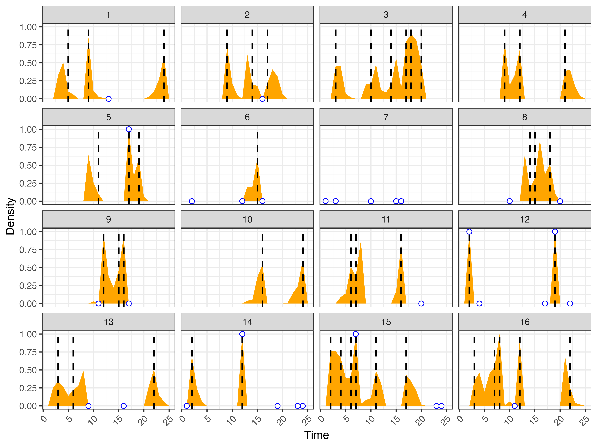
The antibody model needs a level from which to start solving each individual’s trajectory. By default, these starting levels are set to zero, assuming that individual’s begin life with no detectable antibodies (assuming that all maternal antibodies have waned). That is sensible when the first possible infection time is early enough that pre-existing antibody can be ignored, but it may be less suitable when the analysis begins part way through an individual’s antibody history.
There are several ways to provide starting levels. The short character options are useful for simpler analyses, while an explicit data frame gives the most control. The following code records the default and median-based options. We then create a data set whose antibody levels are non-zero at the start of the observation window and vary between individuals, while retaining the usual simulated infection histories. To keep this example focused on starting levels, it uses one antigenic coordinate and one measured biomarker ID.
Starting levels supplied through start_level are fixed
inputs used to begin the antibody trajectories; they are not estimated
MCMC parameters. The choice of starting-level summary or explicit values
should therefore be treated as a modelling assumption and checked with
sensitivity analyses when it is uncertain.
starting_levels_default <- "none"
starting_levels_median <- "median"
starting_level_function <- function(data) {
create_start_level_data(data, start_level_summary = "none", randomize = FALSE) %>%
mutate(starting_level = 2 + (individual - 1) %% 4)
}
starting_antigenic_map <- data.frame(
x_coord = 0, y_coord = 0, inf_times = possible_exposure_times
)
starting_sampling_times <- sampling_times
starting_attack_rates <- attack_rates
set.seed(124)
starting_simulated_data <- simulate_data(
par_tab = base_par_tab, n_indiv = n_indiv,
possible_exposure_times = possible_exposure_times,
measured_biomarker_ids = max(possible_exposure_times),
sampling_times = starting_sampling_times, nsamps = length(starting_sampling_times),
antigenic_map = starting_antigenic_map, attack_rates = starting_attack_rates,
data_type = "discrete", demographics = demographics,
starting_levels = starting_level_function
)
starting_antibody_data <- as.data.frame(starting_simulated_data$antibody_data)
starting_infection_matrix <- as.matrix(starting_simulated_data$infection_histories)
starting_levels_explicit <- starting_simulated_data$start_levels
head(starting_levels_explicit)
#> individual sample_time birth repeat_number biomarker_id biomarker_group
#> 1 1 8 3 1 25 1
#> 2 1 12 3 1 25 1
#> 3 1 16 3 1 25 1
#> 4 1 20 3 1 25 1
#> 5 1 24 3 1 25 1
#> 6 2 8 3 1 25 1
#> measurement starting_level start_index
#> 1 0 2 1
#> 2 0 2 1
#> 3 0 2 1
#> 4 0 2 1
#> 5 0 2 1
#> 6 0 3 2
starting_fit <- serosolver(
par_tab = base_par_tab, antibody_data = starting_antibody_data,
antigenic_map = starting_antigenic_map,
possible_exposure_times = possible_exposure_times,
start_level = starting_levels_explicit,
filename = "starting_levels_one_biomarker", data_type = "discrete",
n_chains = 3, parallel = TRUE, mcmc_pars = mcmc_pars
)The shorter alternatives would be passed as
start_level = "none" (i.e., ignore starting levels) or
start_level = "median" (i.e., use the median of the
earliest measurements for that individual against that biomarker ID). An
explicit table is useful when starting levels come from another analysis
or need to be set differently for particular individuals, biomarker IDs,
or biomarker groups. More details on each option can be found in the
help files
Starting antibody levels represent antibody present before the first modelled infection time. Here, the observations are generated using both individual-specific starting levels and simulated infection histories. The model-fit plot compares fitted trajectories with these observations, and the infection-history plot shows the simulated infection histories.
starting_levels_plot <- starting_levels_explicit %>%
filter(individual %in% 1:4) %>%
select(individual, biomarker_id, biomarker_group, starting_level) %>%
distinct() %>%
arrange(individual, biomarker_group, biomarker_id) %>%
mutate(start_index = row_number())
plot_model_fits(
starting_fit$mcmc_chains$theta_chain,
starting_fit$mcmc_chains$inf_chain,
antibody_data = starting_antibody_data,
demographics = demographics,
individuals = 1:4,
par_tab = base_par_tab,
antigenic_map = starting_antigenic_map,
possible_exposure_times = possible_exposure_times,
known_infection_history = starting_infection_matrix,
start_level = starting_levels_plot,
data_type = "discrete",
orientation = "longitudinal",
expand_to_all_times = TRUE
)[[1]]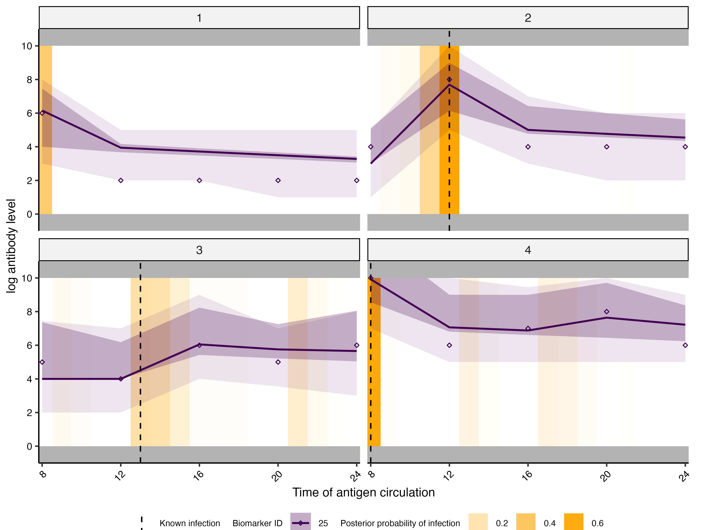
Measurements against different biomarkers can have systematic shifts
that are not explained by the shared antibody kinetics model. A
measurement offset is an estimated additive shift for a particular
biomarker and observation group. The parameter is called
rho. It is added to the model-predicted antibody level for
the relevant measurements before the observation model is applied.
add_rhos_par_tab() appends one rho row to
par_tab for each measured biomarker and observation group.
These rows have par_type = 3. The par_tab rows
do not contain the biomarker IDs themselves, so the accompanying
measurement_indices table provides the link:
rho_index = 1 refers to the first rho row,
rho_index = 2 to the second, and so on.
offset_setup <- add_rhos_par_tab(
base_par_tab, sampled_viruses = measured_biomarker_ids, n_obs_types = 1
)
offset_par_tab <- offset_setup[[1]]
measurement_indices <- offset_setup[[2]]
offset_par_tab$values[offset_par_tab$names == "rho"] <-
seq(-2, 2, length.out = length(measured_biomarker_ids))
offset_par_tab %>%
filter(names == "rho") %>%
select(names, par_type, biomarker_group, values, lower_bound, upper_bound)
#> names par_type biomarker_group values lower_bound upper_bound
#> 1 rho 3 1 -2.000 -10 10
#> 2 rho 3 1 -1.667 -10 10
#> 3 rho 3 1 -1.333 -10 10
#> 4 rho 3 1 -1.000 -10 10
#> 5 rho 3 1 -0.667 -10 10
#> 6 rho 3 1 -0.333 -10 10
#> 7 rho 3 1 0.000 -10 10
#> 8 rho 3 1 0.333 -10 10
#> 9 rho 3 1 0.667 -10 10
#> 10 rho 3 1 1.000 -10 10
#> 11 rho 3 1 1.333 -10 10
#> 12 rho 3 1 1.667 -10 10
#> 13 rho 3 1 2.000 -10 10
head(measurement_indices)
#> biomarker_id biomarker_group rho_index
#> 1 1 1 1
#> 2 3 1 2
#> 3 5 1 3
#> 4 7 1 4
#> 5 9 1 5
#> 6 11 1 6
rho_prior_func <- function(par_tab) {
par_names <- as.character(par_tab$names)
rho_rows <- which(par_names == "rho")
function(pars) {
names(pars) <- par_names
sum(dnorm(pars[rho_rows], mean = 0, sd = 1, log = TRUE))
}
}The simulated data below include different known shifts for the
measured biomarkers. The fitted model receives the
measurement_indices table but is not given the values of
the shifts; it estimates the rho parameters from the data.
In practice, rho estimates are often highly correlated with
attack-rate estimates because both can explain higher observed antibody
levels. This feature therefore works best when the rho
parameters are fixed at known or assumed values, unless the data provide
enough information to separate the two effects.
offset_fit <- serosolver(
par_tab = offset_par_tab, antibody_data = offset_data,
antigenic_map = antigenic_map,
possible_exposure_times = possible_exposure_times,
measurement_bias = measurement_indices,
prior_func = rho_prior_func,
filename = "measurement_bias", data_type = "discrete",
n_chains = 3, parallel = TRUE, mcmc_pars = mcmc_pars
)The histograms below compare observations generated from the same simulated infection histories, with and without the measurement offsets. Three biomarker IDs are shown to make the shifts easy to see.
comparison_ids <- measured_biomarker_ids
offset_comparison <- bind_rows(
offset_data %>% mutate(offset = "With measurement offsets"),
unshifted_data %>% mutate(offset = "Without measurement offsets")
) %>%
filter(biomarker_id %in% comparison_ids)
ggplot(offset_comparison, aes(x = measurement, fill = offset)) +
geom_histogram(binwidth = 1, boundary = 0, position = "identity", alpha = 0.5) +
facet_wrap(~biomarker_id) +
labs(x = "Observed measurement", y = "Number of observations", fill = NULL) +
theme_bw()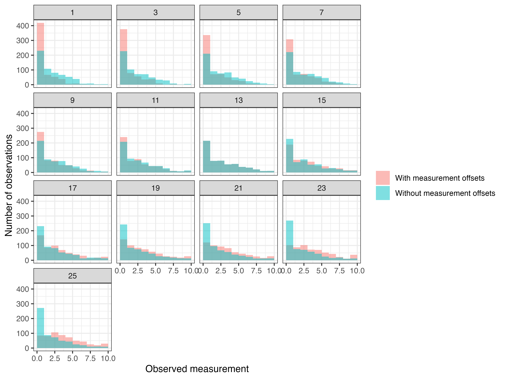
The point ranges below show the posterior medians and 95% credible
intervals for the rho parameters. The open points show the
values used to simulate the data. Repeated rho rows are
given unique names when the chains are read, so they appear as
rho, rho.1, rho.2, and so on.
rho_estimates <- offset_fit$all_diagnostics$theta_estimates %>%
filter(grepl("^rho(\\.[0-9]+)?$", names)) %>%
select(names, median, lower95_CrI, upper95_CrI)
rho_truth <- offset_par_tab %>%
filter(names == "rho") %>%
transmute(names = make.unique(as.character(names)), true = values)
rho_plot_data <- left_join(rho_estimates, rho_truth, by = "names") %>%
mutate(names = factor(names, levels = names))
ggplot(rho_plot_data, aes(x = names, y = median)) +
geom_pointrange(
aes(ymin = lower95_CrI, ymax = upper95_CrI,
colour = "Posterior median and 95% CrI")
) +
geom_point(
aes(y = true, shape = "True simulated rho"),
colour = "black", fill = "white", size = 2.5
) +
geom_hline(yintercept = 0, linetype = "dashed", colour = "grey50") +
scale_colour_manual(name = NULL, values = c("Posterior median and 95% CrI" = "#0072B2")) +
scale_shape_manual(name = NULL, values = c("True simulated rho" = 21)) +
labs(x = "Measurement offset parameter", y = "rho") +
theme_bw() +
theme(axis.text.x = element_text(angle = 45, hjust = 1))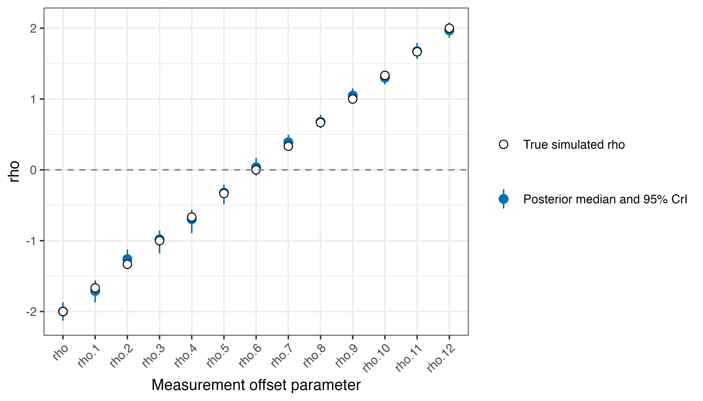
The standard model assumes linear waning of log antibody levels,
which means that the remaining boost falls by a fixed proportion per
unit of time until it reaches zero. We have found that some data are
better described by assuming exponential waning of log antibody levels.
This can be achieved by adding a fixed model-option row named
exponential_waning to par_tab, with
values = 1 and par_type = 0. This row selects
the exponential form for the short- and long-term responses. It also
changes the cross-reactivity model from a linear decline with antigenic
distance to an exponential decline. If the row is absent, the model uses
the standard linear form; values = 0 explicitly selects
that form.
The old exponential_waning argument is retained for
compatibility but is being deprecated. When both the argument and the
par_tab row are supplied, the par_tab row
takes precedence.
Priors are still needed for any estimated waning and cross-reactivity parameters. Under the exponential form these parameters should be given positive bounds and priors on a positive scale, such as a log-normal prior.
exponential_par_tab <- base_par_tab
exponential_par_tab$values[exponential_par_tab$names == "exponential_waning"] <- 1
exponential_fit <- serosolver(
par_tab = exponential_par_tab, antibody_data = exponential_data,
antigenic_map = antigenic_map,
possible_exposure_times = possible_exposure_times,
filename = "exponential_waning", data_type = "discrete",
n_chains = 3, parallel = TRUE, mcmc_pars = mcmc_pars
)
exponential_fit$all_diagnostics$theta_estimates %>%
filter(names %in% c("wane_short", "wane_long", "cr_short", "cr_long")) %>%
select(names, median, lower95_CrI, upper95_CrI)
#> names median lower95_CrI upper95_CrI
#> <char> <num> <num> <num>
#> 1: wane_short 0.270 0.1195 0.319
#> 2: cr_long 0.110 0.0416 0.131
#> 3: cr_short 0.345 0.2890 0.402
plot_estimated_antibody_model(
exponential_fit$mcmc_chains$theta_chain, settings = exponential_fit$settings,
solve_times = possible_exposure_times
) + coord_cartesian(ylim = c(0, 10))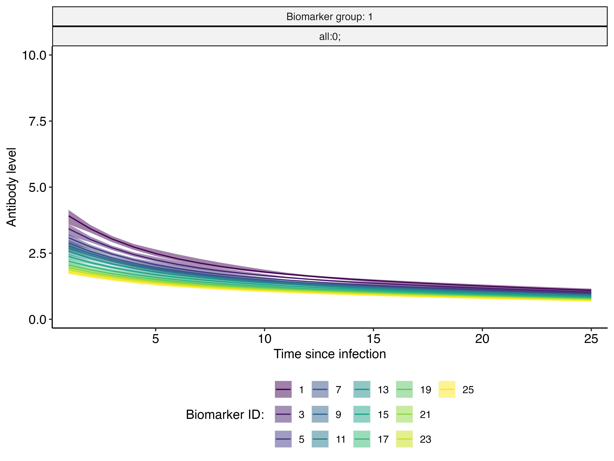
A study may measure more than one antibody outcome for each
individual, such as a discrete antibody titre and a continuous avidity
measurement. These are represented as separate
biomarker_groups. Each group has its own observation model
and antibody-kinetics parameters, but the groups share the same
individual infection histories. The two measurements can therefore
provide complementary information about the same infections.
multi_par_tab <- extend_par_tab_biomarker_groups(base_par_tab, 2)
multi_par_tab$values[multi_par_tab$biomarker_group == 2 &
multi_par_tab$names == "boost_long"] <- 5.5
multi_par_tab$values[multi_par_tab$biomarker_group == 2 &
multi_par_tab$names == "boost_short"] <- 4.5
multi_par_tab$values[multi_par_tab$biomarker_group == 2 &
multi_par_tab$names == "boost_delay"] <- 1.5
multi_par_tab$values[multi_par_tab$biomarker_group == 2 &
multi_par_tab$names == "wane_long"] <- 0.08
multi_par_tab$values[multi_par_tab$biomarker_group == 2 &
multi_par_tab$names == "wane_short"] <- 0.6
multi_par_tab$values[multi_par_tab$biomarker_group == 2 &
multi_par_tab$names == "cr_long"] <- 0.25
multi_par_tab$values[multi_par_tab$biomarker_group == 2 &
multi_par_tab$names == "cr_short"] <- 0.75
multi_antigenic_map <- bind_rows(
antigenic_map %>% mutate(biomarker_group = 1),
antigenic_map %>% mutate(biomarker_group = 2)
)
multi_simulated <- simulate_data(
par_tab = multi_par_tab, n_indiv = n_indiv,
possible_exposure_times = possible_exposure_times,
measured_biomarker_ids = measured_biomarker_ids,
sampling_times = sampling_times, nsamps = length(sampling_times),
antigenic_map = multi_antigenic_map, attack_rates = attack_rates,
data_type = c("discrete", "continuous"), demographics = demographics
)
multi_data <- as.data.frame(multi_simulated$antibody_data)
table(multi_data$biomarker_group)
#>
#> 1 2
#> 7800 7800The first observation group below is discrete and bounded, while the
second is continuous and bounded. The distinction is specified by the
corresponding entries in data_type; both groups still
contribute to the same infection-history inference.
multi_prior_func <- function(par_tab) {
par_names <- as.character(par_tab$names)
biomarker_group <- par_tab$biomarker_group
boost_long_1 <- which(par_names == "boost_long" & biomarker_group == 1)
boost_long_2 <- which(par_names == "boost_long" & biomarker_group == 2)
boost_short_1 <- which(par_names == "boost_short" & biomarker_group == 1)
boost_short_2 <- which(par_names == "boost_short" & biomarker_group == 2)
wane_short_1 <- which(par_names == "wane_short" & biomarker_group == 1)
wane_short_2 <- which(par_names == "wane_short" & biomarker_group == 2)
obs_sd_1 <- which(par_names == "obs_sd" & biomarker_group == 1)
obs_sd_2 <- which(par_names == "obs_sd" & biomarker_group == 2)
function(pars) {
names(pars) <- par_names
sum(
dlnorm(pars[boost_long_1], log(2), 0.5, log = TRUE),
dlnorm(pars[boost_long_2], log(5), 0.5, log = TRUE),
dlnorm(pars[boost_short_1], log(2), 0.5, log = TRUE),
dlnorm(pars[boost_short_2], log(4), 0.5, log = TRUE),
dbeta(pars[wane_short_1], 4, 8, log = TRUE),
dbeta(pars[wane_short_2], 8, 4, log = TRUE),
dlnorm(pars[obs_sd_1], log(1), 0.5, log = TRUE),
dlnorm(pars[obs_sd_2], log(0.7), 0.5, log = TRUE)
)
}
}
multi_fit <- serosolver(
par_tab = multi_par_tab, antibody_data = multi_data,
antigenic_map = multi_antigenic_map,
possible_exposure_times = possible_exposure_times,
prior_func = multi_prior_func,
data_type = c("discrete", "continuous"), filename = "multiple_biomarker_groups",
n_chains = 3, parallel = TRUE, mcmc_pars = mcmc_pars
)
multi_fit$all_diagnostics$theta_estimates %>%
filter(names %in% c("boost_short", "obs_sd", "min_measurement",
"max_measurement")) %>%
select(names, median, lower95_CrI, upper95_CrI)
#> names median lower95_CrI upper95_CrI
#> <char> <num> <num> <num>
#> 1: boost_short 2.066 1.830 2.21
#> 2: obs_sd 0.992 0.971 1.02
plot_estimated_antibody_model(
multi_fit$mcmc_chains$theta_chain, settings = multi_fit$settings,
solve_times = possible_exposure_times, by_group = TRUE
) + coord_cartesian(ylim = c(0, 10))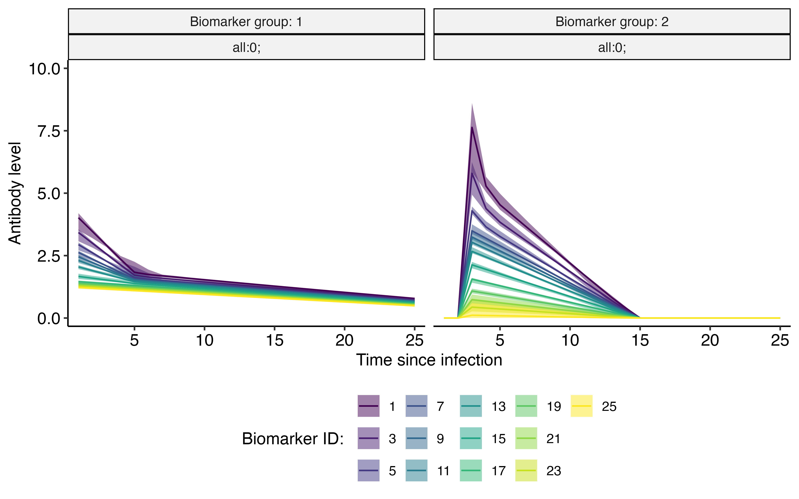
Model fits for biomarker group 1 observations.
## Biomarker group 1
plot_model_fits(
multi_fit$mcmc_chains$theta_chain, multi_fit$mcmc_chains$inf_chain,
known_infection_history = multi_simulated$infection_histories,
settings = multi_fit$settings, individuals = 1:3,
orientation = "cross-sectional", expand_to_all_times = TRUE
)[[1]]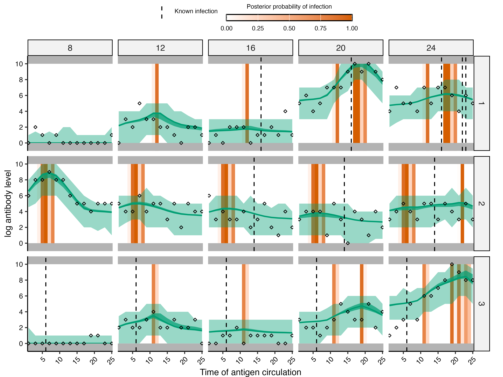
Model fits for biomarker group 2 observations.
## Biomarker group 2
plot_model_fits(
multi_fit$mcmc_chains$theta_chain, multi_fit$mcmc_chains$inf_chain,
known_infection_history = multi_simulated$infection_histories,
settings = multi_fit$settings, individuals = 1:3,
orientation = "cross-sectional", expand_to_all_times = TRUE
)[[2]]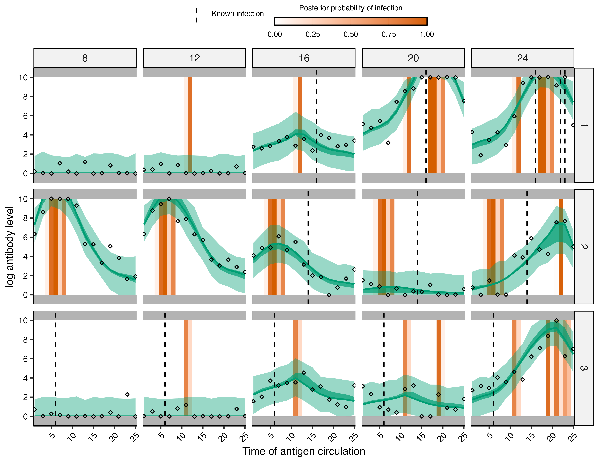
Warning: Prior version 1 is mathematically correct, but it often requires very long MCMC chains to run well. With shorter chains, convergence can be poor, as demonstrated in this vignette.
The infection-history prior controls how the model describes the
probability of infection across the possible exposure times and how new
histories are proposed during MCMC. In the default
prior_version = 2, the infection-history prior is described
using the beta-distributed infection-rate parameters in
par_tab; the model then integrates over the corresponding
time-specific probabilities.
prior_version = 1 instead has a separate
phi parameter for every possible exposure time. At a given
parameter draw, phi is directly the probability of
infection at that time. This gives more direct control over the assumed
infection pattern: the starting value, bounds, and prior can vary by
time, and individual probabilities can be fixed when they are known or
assumed. infection_model_prior_shape1 and
infection_model_prior_shape2 are still required entries in
the parameter table, but they do not provide the time-specific infection
probabilities in this version.
This gives two related but different ways to describe infection
rates. Under prior version 1, each phi is an estimated
parameter representing the probability of infection in one particular
exposure period, conditional on an individual being alive and at risk.
These parameters can therefore be read as time-specific modelled attack
rates, with a posterior distribution for each time. They are
probabilities used to describe the infection-history prior; they are not
the realised fraction infected in this finite simulated sample.
The attack rates shown by plot_attack_rates() are
calculated differently. For each posterior draw, the function counts the
inferred infection states at each time and divides by the number of
people at risk. This is the posterior attack rate implied by the latent
infection histories. It is the main attack rate summary under prior
version 2, where the infection-history prior is controlled by
beta-distributed parameters rather than a separate phi for
each time. The same infection-history summary can also be plotted for a
prior-version-1 fit, but it should not be confused with the posterior
density of the phi parameters.
Prior version 2 is the default because the per-time phi
parameters are strongly correlated with the latent infection states. For
example, a higher value of phi at a particular time can
often be offset by changing which individuals are assigned an infection
at that time. Sampling both quantities directly therefore makes the MCMC
explore the posterior inefficiently and can lead to slow mixing. Prior
version 2 avoids this extra set of sampled parameters by integrating
over the time-specific infection probabilities under their beta prior
when evaluating the infection-history prior. Prior version 1 is useful
when those probabilities need to be controlled separately, but is
usually more difficult to fit.
phi
prior1_par_tab <- check_par_tab(
base_par_tab, mcmc = TRUE, version = 1,
possible_exposure_times = possible_exposure_times, verbose = FALSE
)
phi_rows <- which(prior1_par_tab$names == "phi")
true_phi <- simulated_data$attack_rates %>%
filter(population_group == 1) %>%
arrange(time) %>%
pull(prob_infection)
stopifnot(length(true_phi) == length(phi_rows))
## Use the generating probabilities rather than the realised attack rates.
## The latter are random sample proportions from the simulated histories.
phi_start_values <- true_phi
prior1_par_tab$values[phi_rows] <- phi_start_values
prior1_par_tab$lower_start[phi_rows] <- pmax(phi_start_values - 0.05, 0.001)
prior1_par_tab$upper_start[phi_rows] <- pmin(phi_start_values + 0.05, 0.999)
## Fix two time-specific infection probabilities.
fixed_phi_times <- c(1, 25)
fixed_phi_rows <- phi_rows[match(fixed_phi_times, possible_exposure_times)]
prior1_par_tab$fixed[fixed_phi_rows] <- 1
## These are separate, time-specific priors on phi, not the prior-version-2
## infection_model_prior_shape1 and infection_model_prior_shape2 entries.
phi_prior_concentration <- rep(10, length(phi_rows))
phi_prior_concentration[13] <- 100
phi_prior_shape1 <- pmax(phi_start_values * phi_prior_concentration, 0.5)
phi_prior_shape2 <- pmax((1 - phi_start_values) * phi_prior_concentration, 0.5)
prior1_prior_func <- function(par_tab) {
phi_rows <- which(par_tab$names == "phi")
phi_prior_concentration <- rep(10, length(phi_rows))
phi_prior_concentration[13] <- 100
phi_start_values <- par_tab$values[phi_rows]
phi_prior_shape1 <- pmax(phi_start_values * phi_prior_concentration, 0.5)
phi_prior_shape2 <- pmax((1 - phi_start_values) * phi_prior_concentration, 0.5)
function(pars) {
sum(dbeta(
pars[phi_rows], phi_prior_shape1, phi_prior_shape2, log = TRUE
))
}
}
phi_table <- prior1_par_tab %>%
filter(names == "phi") %>%
transmute(
time = possible_exposure_times,
probability = values,
fixed = fixed,
prior_mean = phi_prior_shape1 / (phi_prior_shape1 + phi_prior_shape2),
prior_concentration = phi_prior_concentration
)
## Show the attack-rate distributions implied by three of the phi priors.
n_alive <- get_n_alive(antibody_data, possible_exposure_times)
prior_prediction_times <- c(5, 13, 20)
set.seed(103)
prior_attack_rate_draws <- bind_rows(lapply(prior_prediction_times, function(i) {
phi_draws <- rbeta(10000, phi_prior_shape1[i], phi_prior_shape2[i])
data.frame(
time = possible_exposure_times[i],
attack_rate = rbinom(length(phi_draws), n_alive[i], phi_draws) / n_alive[i]
)
}))
ggplot(prior_attack_rate_draws, aes(attack_rate)) +
geom_histogram(bins = 50, fill = "grey70", colour = "white") +
facet_wrap(~time) +
labs(x = "Attack rate in one exposure period", y = "Prior predictive draws") +
theme_classic()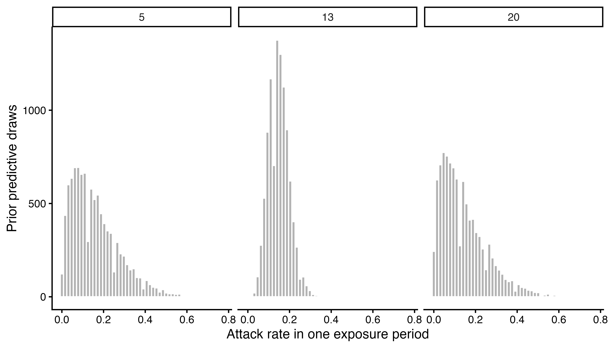
prior1_fit <- serosolver(
par_tab = prior1_par_tab, antibody_data = antibody_data,
antigenic_map = antigenic_map,
possible_exposure_times = possible_exposure_times,
prior_version = 1, prior_func = prior1_prior_func,
filename = "prior_version_1", data_type = "discrete",
n_chains = 3, parallel = TRUE, mcmc_pars = mcmc_pars
)The posterior densities of the phi parameters show the
estimated time-specific infection probabilities directly. The fixed
phi values are shown in phi_table above rather
than as densities, since they are point values rather than estimated
quantities.
phi_chain_names <- make.unique(as.character(prior1_par_tab$names))
phi_chain_names <- phi_chain_names[
prior1_par_tab$names == "phi" & prior1_par_tab$fixed == 0
]
prior1_fit$mcmc_chains$theta_chain %>%
select(samp_no, chain_no, all_of(phi_chain_names)) %>%
pivot_longer(-c(samp_no, chain_no), names_to = "parameter") %>%
mutate(parameter = factor(parameter, levels = phi_chain_names)) %>%
ggplot(aes(value, fill = factor(chain_no))) +
geom_density(alpha = 0.25) +
facet_wrap(~parameter, scales = "free") +
labs(x = "Per-time probability of infection", y = "Posterior density",
fill = "Chain") +
theme_classic()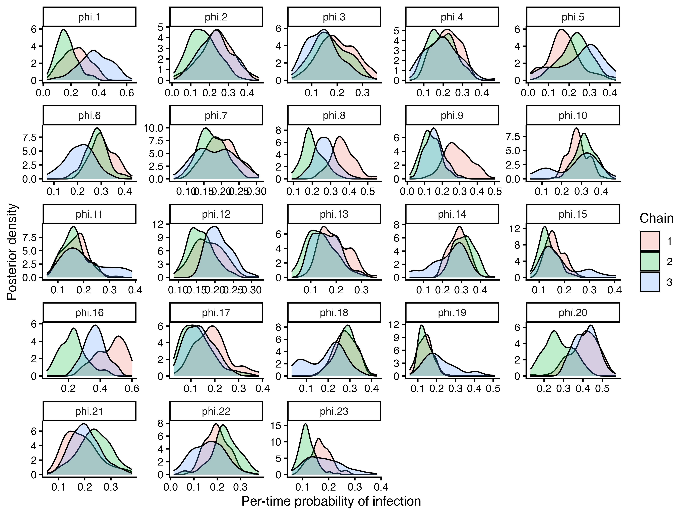
phi_estimates <- prior1_fit$mcmc_chains$theta_chain %>%
select(all_of(phi_chain_names)) %>%
pivot_longer(everything(), names_to = "parameter") %>%
group_by(parameter) %>%
summarise(
median = median(value),
lower = quantile(value, 0.025),
upper = quantile(value, 0.975),
.groups = "drop"
) %>%
mutate(time = possible_exposure_times[match(parameter, phi_chain_names)])
true_attack_rates <- simulated_data$attack_rates %>%
transmute(population_group, time, AR) %>%
filter(is.finite(AR))
true_phi_rates <- simulated_data$attack_rates %>%
transmute(population_group, time, AR = prob_infection)
attack_rate_plot <- plot_attack_rates(
prior1_fit$mcmc_chains$inf_chain, settings = prior1_fit$settings,
by_group = FALSE, plot_den = FALSE, pad_chain = TRUE,
true_ar = NULL
) +
labs(colour = "Estimated attack rate from inferred infection histories\n(colour indicates samples taken)") +
guides(
colour = guide_legend(nrow = 2),
shape = guide_legend(nrow = 2)
)
attack_rate_plot +
geom_point(
data = true_attack_rates,
aes(
x = time - 0.18, y = AR,
shape = "True attack rate from simulated infection histories"
),
inherit.aes = FALSE, colour = "black", size = 2.5
) +
geom_pointrange(
data = phi_estimates,
aes(
x = time + 0.18, y = median, ymin = lower, ymax = upper,
shape = "Estimated phi"
),
inherit.aes = FALSE, colour = "black", size = 0.4
) +
geom_point(
data = true_phi_rates,
aes(x = time + 0.18, y = AR, shape = "True phi used in simulation"),
inherit.aes = FALSE, colour = "black", size = 2
) +
scale_shape_manual(
name = "Reference and phi quantities",
values = c(
"True attack rate from simulated infection histories" = 1,
"Estimated phi" = 16,
"True phi used in simulation" = 2
)
)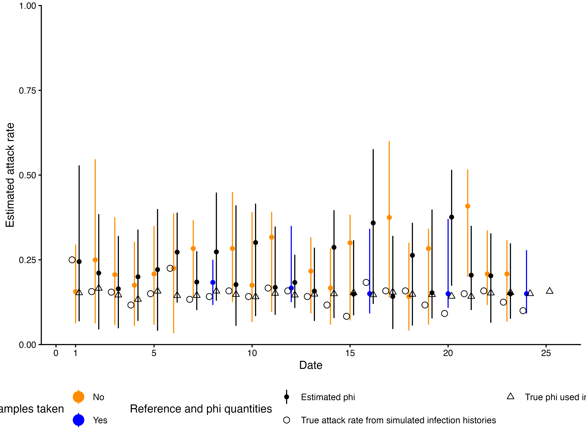
The serosolver guide covers the main workflow, MCMC file handling, and general diagnostics. The demographic variables and covariates vignette covers fixed and time-varying covariates and the separate variant-specific workaround. The case-study vignettes provide longer examples using real datasets.